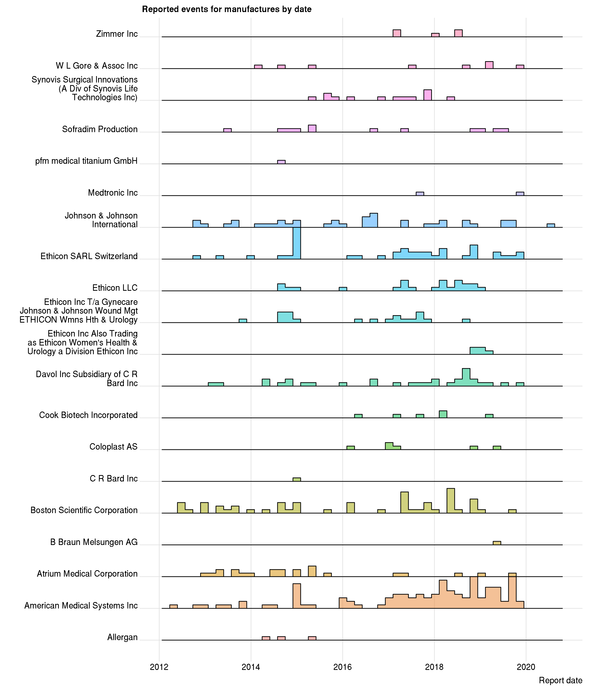

Code
Show All Code
Hide All Code
Medical Device Meeting Report Manufacturer tf-idf
Curtis Murray
Summary of Mesh events
We take the reports, and filter for those that are mesh events.
Number of Mesh events
Mesh events outcomes
Mesh event types
Associated terms
Mesh manufacturers
Without name matching
With name matching
Date of reports
